Stop Using Print, and Start Debugging
Learn how to debug your Python program with Visual Studio Code.
November 11, 2024 · Best Practices, Python
Introduction
I once read that in programming an error in code is called bug for a very specific reason. When computers were still huge mainframes (a long, long time ago) it happened that a bug got stuck in the gears and that’s why the program wouldn’t run anymore!
Today by bugs we mean a very different thing. Everyone, even the most experienced and paid programmers in the world write code that contains bugs, but the skill lies in finding them. In this article, we find out how!
Print and Jupyter Notebooks
It is common for data scientists to write code using Jupyter Notebooks or Google Colab. I too find that they are super convenient to use, unfortunately, though debugging is not as convenient.
In these notebooks, we can split our code into cells, that way at the end of the execution of a cell, we can print out all the values of the variables we are interested in, and see if anything has gone wrong. Or at least we can get an idea of what’s going on inside the code.
Even in cases where we do not use notebooks, we often use print() to figure out the value of variables and thus understand why the code behaved a certain way and fix it.
For example, suppose we want to execute the following code.
admin = get_user_input() #returns user input
if admin == 'admin':
print(f'welcome {admin}')With the previous code, we know we have the variable admin. When this variable takes the value ‘admin’ we want to greet our admin.
We find, however, that this condition never occurs, even when it should occur, since it is our admin who is using the program.
Then what novice programmers generally do is go and print out the admin variable and figure out what’s wrong.
admin = get_user_input() #returns user input
print('The value of admin is : ' , admin)
if admin == 'admin':
print(f'welcome {admin} ')We note that the result of this print is as follows.
The value of admin is : admin\
And we find that our get_user_input function returns one*
- extra and that is why the condition never occurs. We are then ready to fix our code and run everything. Bug found!
But is this the best way to find the bug? Not really. In such simple cases where we have 4 lines of code maybe it is okay, but in more complex projects you have to prefer the debugger tool that is provided by various IDEs.
Debug with VSCode
IDE stands for Integrated Development Environment and is a tool that allows you to write code by providing very useful tools such as a debugger.
In this article, we will look at the VSCode debugger but they all work pretty much the same, so even if you use PyCharm or any other IDE don’t worry.
Let’s start by writing a simple code in Python in VSCode. The example code is as follows.
from random import random, randint
import time
class User:
def __init__(self, name , psw) -> None:
self.name = name
self.psw = psw
def say_hello(self):
print(f'Hello {self.name}')
self.get_name_len()
def get_name_len(self):
print(len(self.name))
def __str__(self) -> str:
return f"{self.name} , {self.psw}"
if __name__ == '__main__':
for _ in range(3):
i = int(randint(0,10))
name = f'user_ {i}'
psw = f'psw_ {i}'
user = User(name, psw)
user.say_hello()In this code, we created a User class, where each user is described by name and password.
Plus a user has two methods, such as say_hello which greets the user, get_name_len which returns the length of the user’s name, and the __str__ method which defines how a user should be printed.
Finally in the main we go to create three random users and have them use the say_hello method.
Let’s now go to introduce an error. For example in the get_name_len method, we only print the length of self instead of self.name.
from random import random, randint
import time
class User:
def __init__(self, name , psw) -> None:
self.name = name
self.psw = psw
def say_hello(self):
print(f'Hello {self.name}')
self.get_name_len()
def get_name_len(self):
print(len(self))
def __str__(self) -> str:
return f"{self.name} , {self.psw}"
if __name__ == '__main__':
for _ in range(3):
i = int(randint(0,10))
name = f'user_ {i}'
psw = f'psw_ {i}'
user = User(name, psw)
user.say_hello()Now if we go to execute the code we will get the following error.
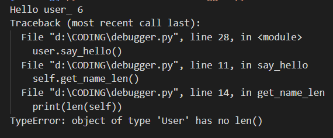
Our purpose now is to try to find the error using the VSCode debugger.
The first thing to do is to insert a Breakpoint at a certain point in your code. With the Breakpoint, you tell your compiler to pause the run at that point so that you can inspect the various variables in your code, and then continue the run only when you want it to.
To enter a Breakpoint click to the far left of your code and a red dot will appear.
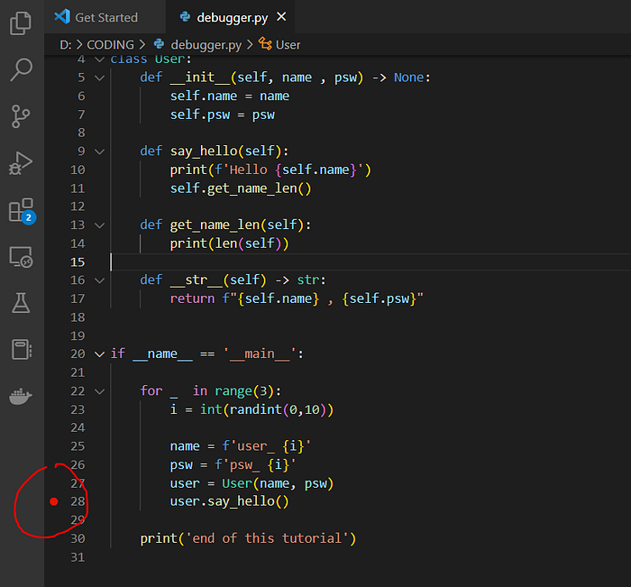
Now let’s run the code in debug mode by clicking on the following icon.
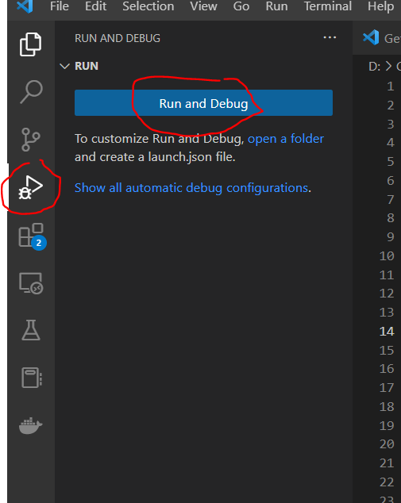
Once you click you will see that your code will start the run but stop almost immediately.
You should now have a screen like this.
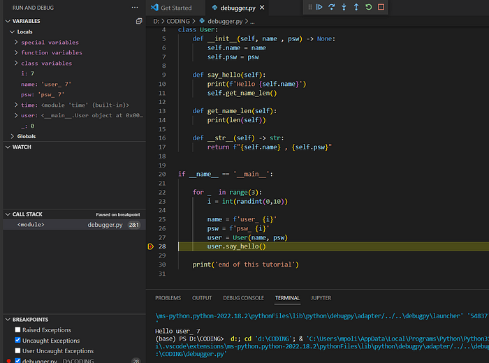
So, the yellow line with that symbol next to it, tells you where the code stopped, right where you put the Breakpoint.
In the upper left corner, on the other hand, you can see the contents of your variables within the code. Many of these variables seem meaningless since they are pointers to functions you have in the code. But if you see well there should be a User variable since before the Breakpoint we have already created a user. In my case, I can see the content which is as follows.
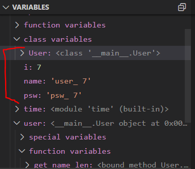
This way I know what the content of my user variable is and I have already saved myself from writing a print().
Now we can start using the main debugger commands found at the top of the bar made like this.
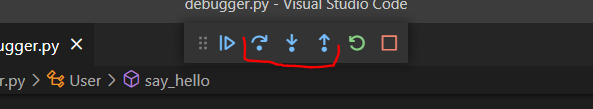
The main commands are those highlighted in red. The first allows us to go forward one line of code to see what happens. The second allows us to go inside a function and see what happens. And the last one allows us to go outside the scope of a function.
Since our program is now stuck on the user.say_hello() function let's click on the down arrow to see what happens inside this function.
Once clicked you will see that the execution will continue within this function.
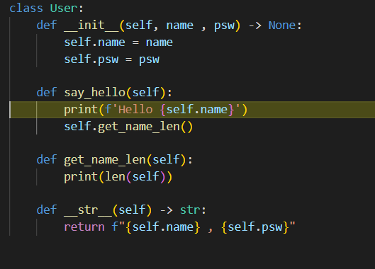
Now we need to understand what the stack is for. The stack tells you basically how many functions you are in. In fact, if you see in the lower left-hand corner now a line has been added.
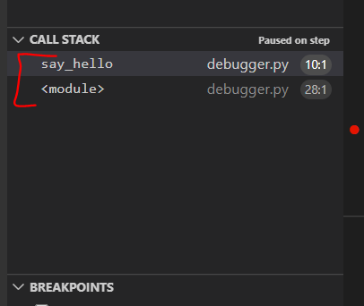
This tells us that we are now in the scope of the say_hello function so if we exit this function by clicking the up arrow, we will be back in the main.
Now let’s move forward one line of code with the forward command.
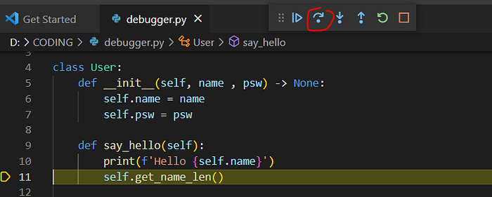
Now that we are over another function, we click the down arrow to go inside the function itself.
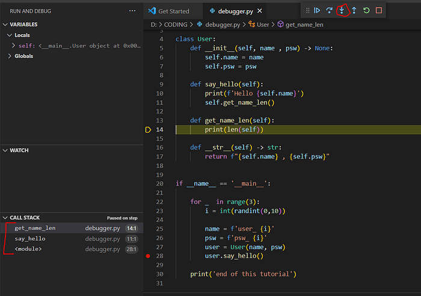
You see that because we have entered inside another function the stack has increased, so we are in a function inside a function (no, this isn’t Inception).
Obviously, we can enter more than one unique Breakpoint. So let’s stop the debug and relaunch it by entering 2 Breakpoints this time.
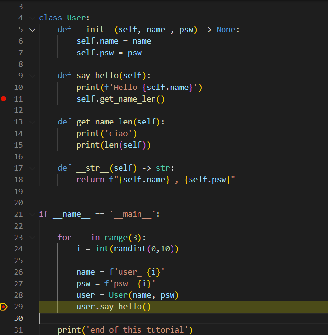
So in this case by clicking on forward, we are going to stop at the second Breakpoint.
If we now click forward again, the code will go to stop, but this time because we found the error!
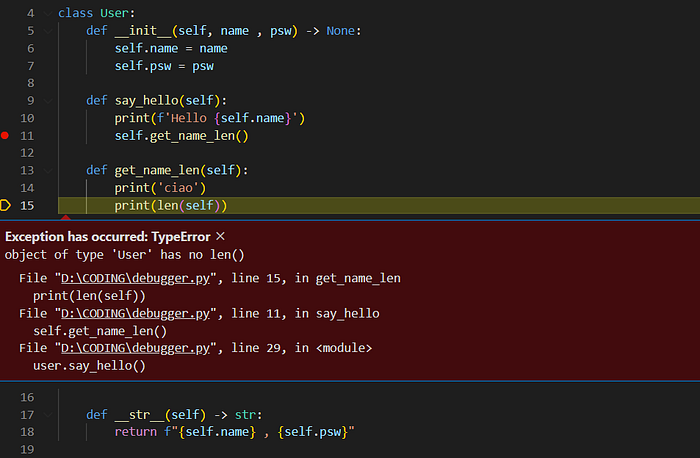
We succeeded in our intent. Error found, and we did not dirty our code with useless prints!
Only one thing remains to be said. What is the watch section for? Well, to look at variables.
Suppose we save all our users in a list.
from random import random, randint
import time
class User:
def __init__(self, name , psw) -> None:
self.name = name
self.psw = psw
def say_hello(self):
print(f'Hello {self.name}')
self.get_name_len()
def get_name_len(self):
print('ciao')
print(len(self.name))
def __str__(self) -> str:
return f"{self.name} , {self.psw}"
if __name__ == '__main__':
users = []
for _ in range(3):
i = int(randint(0,10))
name = f'user_ {i}'
psw = f'psw_ {i}'
user = User(name, psw)
user.say_hello()
users.append(user)
print('end of this tutorial')Now we want to see what happens to this list as we go through the code.
So let’s click on the plus button and add the viable users under watch. In fact, let’s add len(users) as well.
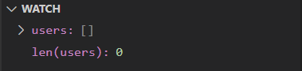
Now as you move forward with your code with the forward command, you will see the list fills up and you will be able to inspect the objects within it.
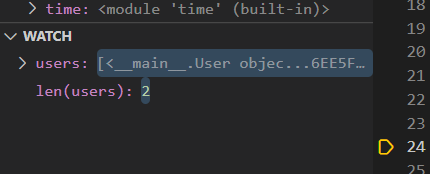
Final Thoughts
Well, these are the basics of using the debugger. It is a very useful and easy tool to use. Of course like all things, you have to get used to it. So the next time you have problems with your code, force yourself to use the debugger instead of using prints and you will see that in no time you will be automatically using it all the time!
The End
Marcello Politi
This article was published on Towards Data Science